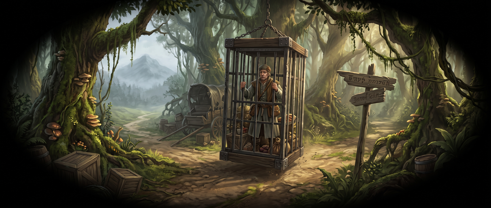
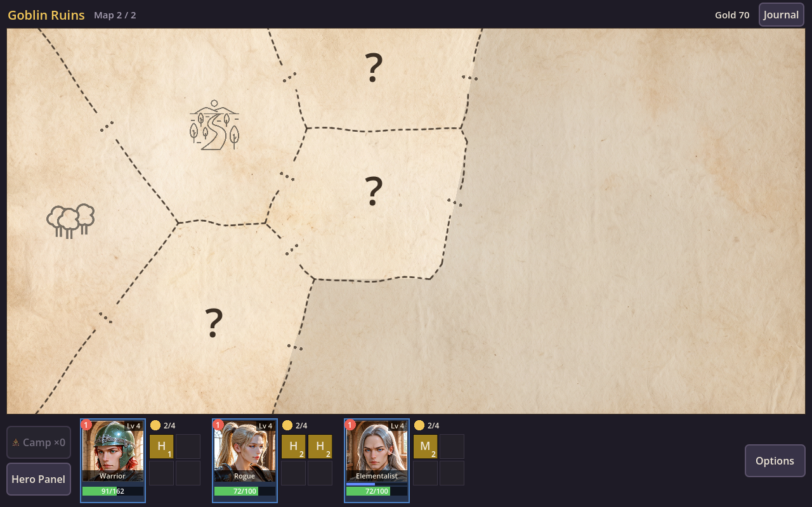
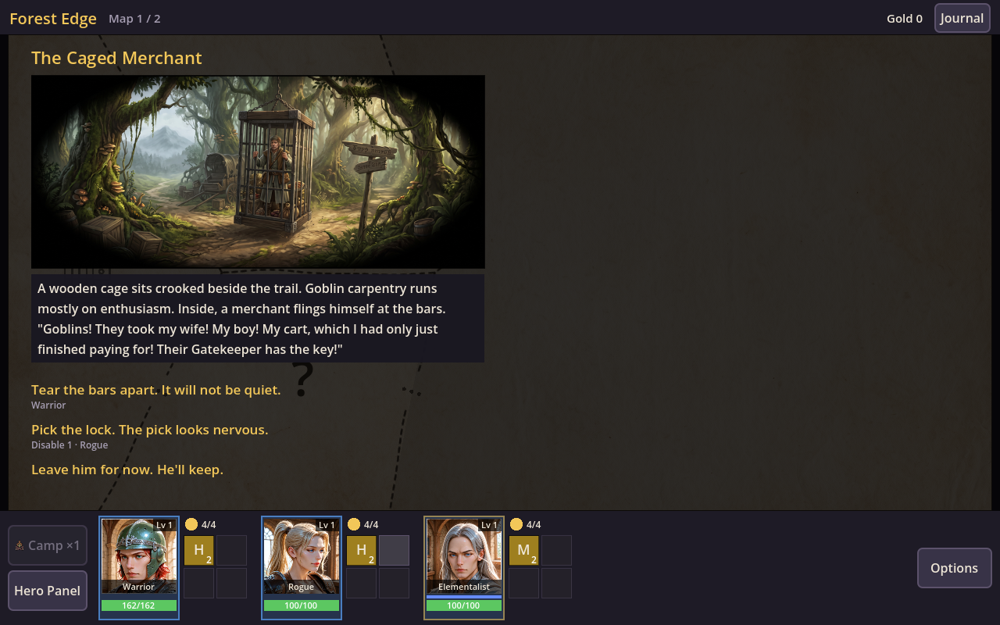
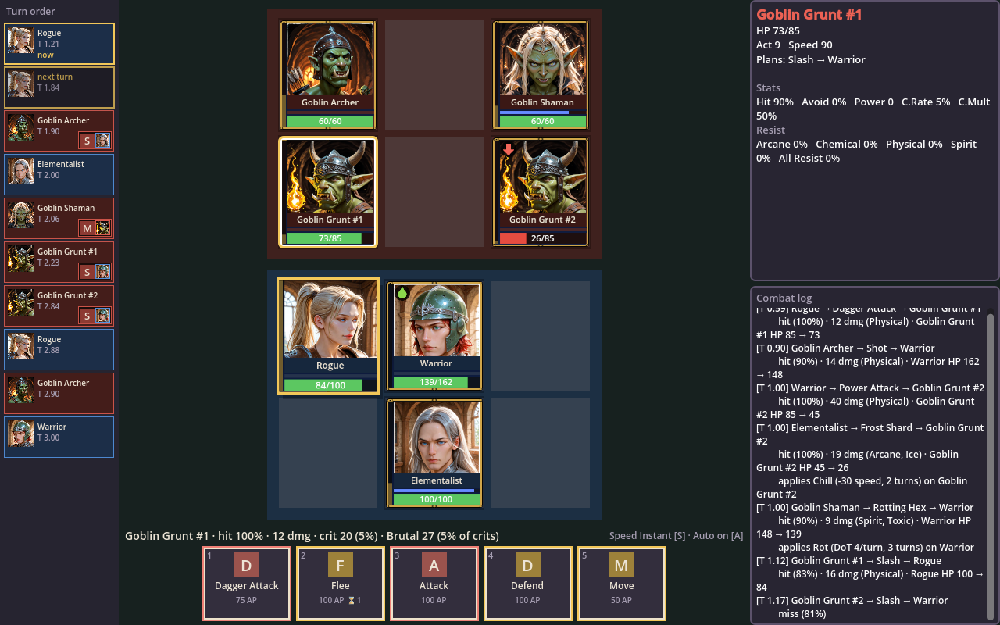
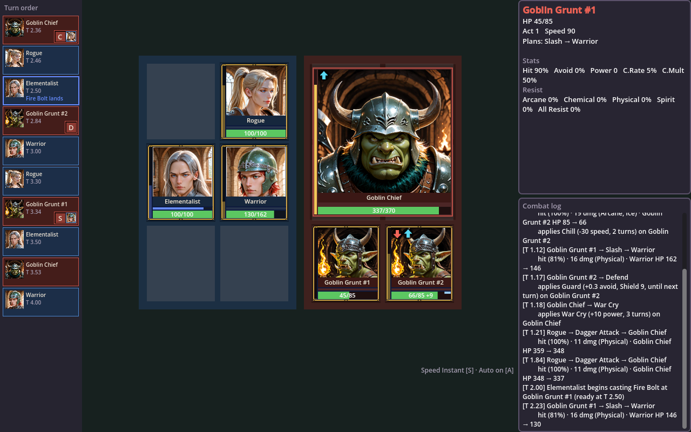
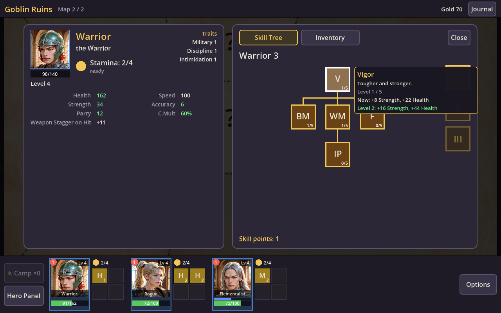
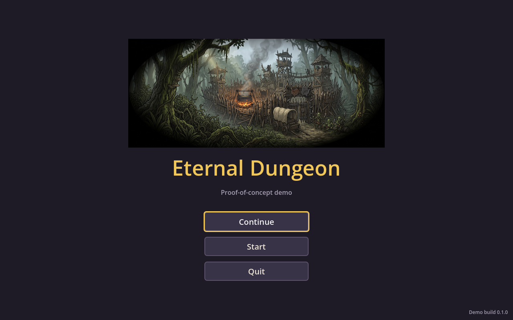

The vision
What the finished game is meant to be. Each part below is written down in the project's design document and is being built milestone by milestone.
Explore a dungeon, Region by Region
Every dungeon is a set of Maps under fog of war. Each step into the unknown costs Stamina; Events, battles, shrines and merchants wait in the Regions. Camp, rest at Sanctuaries, beat each Map's boss and push deeper, or turn back while you still can.
Battles where speed is everything
Combat is purely turn-based on two small grids. A visible turn order shows who acts next, enemies show what they plan to do, and every action's cost decides how soon a hero acts again. Spells take time to cast, and can be interrupted.
Heroes built three ways
Each hero combines a Primary class, a Secondary class and a Dabble skill, drawn from 15 classes. Skill trees unlock masteries; class traits open new choices in Events. Equipment, Blessings and Artifacts layer on top of one tag-based stat system.
Depth is the difficulty
No difficulty settings: how deep you can go is the difficulty. Five scripted dungeons lead into the endless Shadow World. Heroes keep their levels and gear between dungeons, and Reincarnation trades a hero's progress for permanent power and a new race.
Events with a sense of humour
A dry, wry narrator tells the dungeon's stories. Choices depend on who is in your party: a Rogue can pick the lock, a Warrior can tear the bars apart, and a well-read hero may notice what everyone else missed.
Made for Steam
A premium release for Windows and Steam Deck, with mouse, keyboard and controller support, cloud saves, achievements and a free demo before launch. No ads, no in-app purchases.

A wooden cage sits crooked beside the trail. Goblin carpentry runs mostly on enthusiasm. Inside, a merchant flings himself at the bars. "Goblins! They took my wife! My boy! My cart, which I had only just finished paying for! Their Gatekeeper has the key!"
The game today
Screenshots from the current build: the playable first dungeon, the Goblin Raid.






All art shown is placeholder: much of it is AI-generated, used only to test the game while it's being built. The released game will use original, human-made art.
Where it stands
The project is built in milestones, each ending in something playable or testable. The first dungeon is playable from start to finish, and a demo build is going out to playtesters.
- Done
Foundations and rules core
The project, builds and data pipeline; then the full rules engine: stats, combat formulas, turn order, buffs, crowd control, targeting AI and the battle grid, with a command-line battle simulator.
- Done
Playable battle
The battle screen: cards on a table, the turn order, enemy intents, animations, mouse and keyboard play.
- Now
Dungeon 0, the first slice
Exploration, Events, Stamina, Camps and Sanctuaries, XP and skill trees, saving at every step, and the screens for all of it. Playable end to end; now in review and tuning, ending in the go/no-go question: is the loop fun?
- Next
Generated dungeons and equipment
A dungeon generator with event pools, Indoor Maps of Rooms and Hallways, and loot.
- Later
Town and build depth
The Town, the remaining classes, Secondary and Dabble classes, shops, Blessings and the first full dungeons.
- Later
Content and endgame
All 15 classes, dungeons 3 to 5, the Shadow World, Reincarnation and the economy.
- Later
Steam
Achievements, cloud saves, controller and Steam Deck support, a demo, and launch.
How it's made
A small team: a designer who owns the design, art direction and playtesting, and Claude, an AI, as the main developer.
- Godot 4 and C#. All the game's rules live in a plain C# library with no engine code, covered by automated tests. Godot only draws the game and takes input.
- Simulated before it's played. A battle simulator plays thousands of fights, and an auto-player runs whole dungeons, so numbers can be checked before anyone sits down to play.
- Deterministic. Every run comes from one seed: a save is a list of decisions that replays exactly.
- Content as data. Classes, skills, enemies, items and every word on screen live in data tables, edited in a shared spreadsheet and checked automatically on load.
- A living design document. Every rule is written down first, and changes to rules and code land together, so the design and the game never drift apart.
- A voice for the writing. A tone guide and a lore bible keep every Event, name and line consistent.